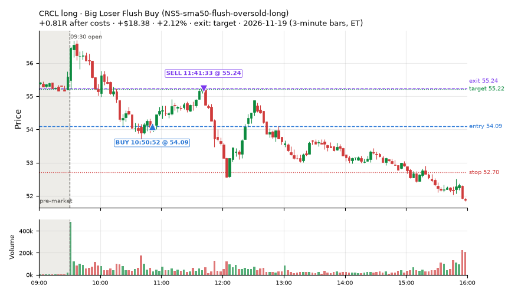
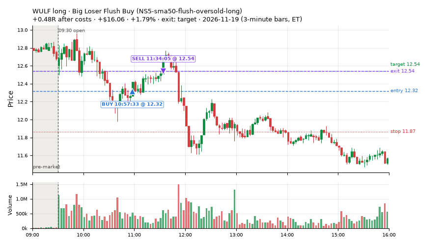
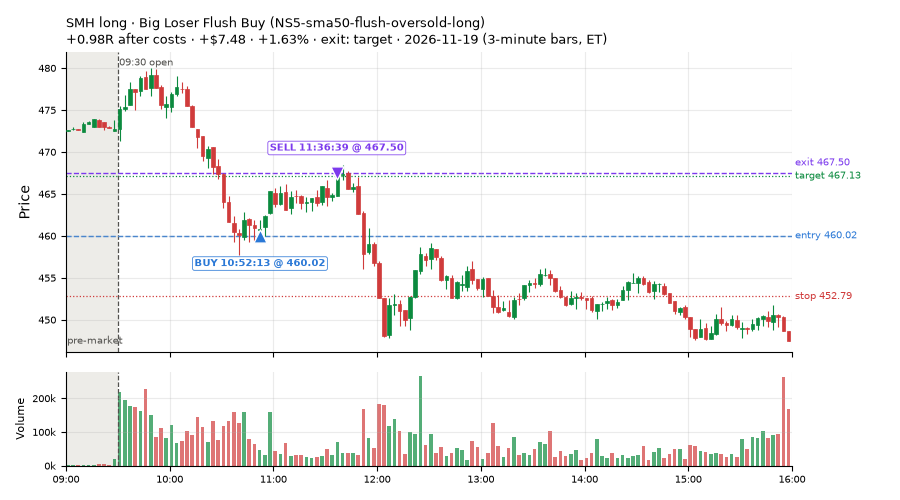
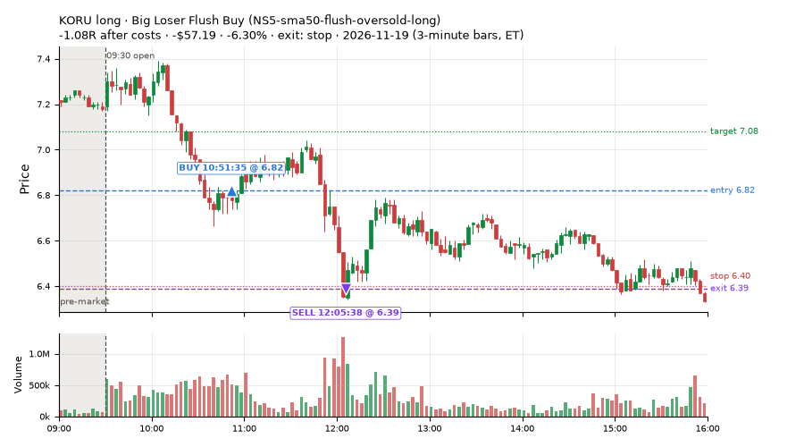
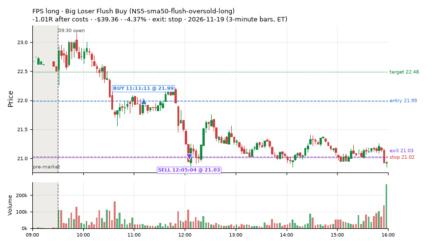
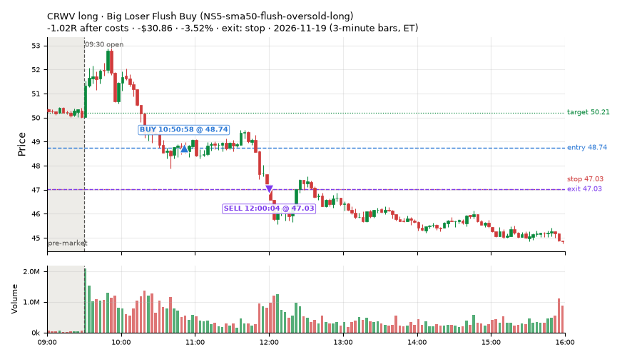
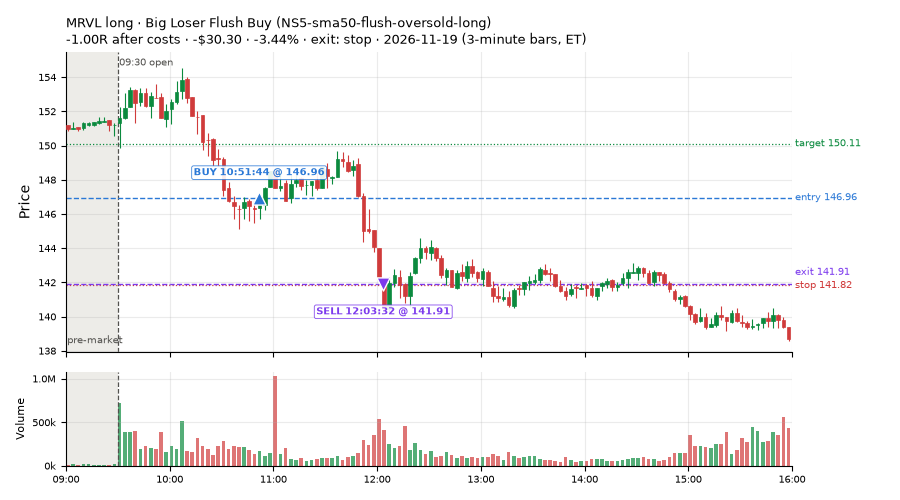
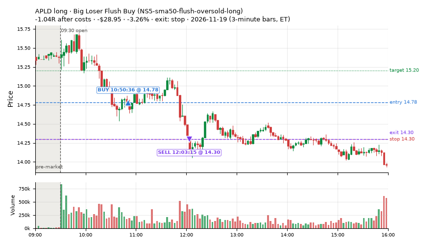

41 trades · win rate 39% · P/L $-300.47
PROBATION: no live setup has passed both locked test periods. 10 owner-directed setups added 2026-10-08 (MarcoFlow top 5 + 5 new), untested live. RW6G1 (RW6 + VWAP band guard) added 2026-10-09, probation.

| Symbol | Setup | Side | In | Out | Entry | Exit | Exit reason | % gained | P/L |
|---|---|---|---|---|---|---|---|---|---|
| CRCL | Big Loser Flush Buy (NS5-sma50-flush-oversold-long) | long | 10:50 | 11:41 | 54.09 | 55.24 | target | +2.12% | $18.38 |
| WULF | Big Loser Flush Buy (NS5-sma50-flush-oversold-long) | long | 10:57 | 11:34 | 12.32 | 12.54 | target | +1.79% | $16.06 |
| SMH | Big Loser Flush Buy (NS5-sma50-flush-oversold-long) | long | 10:52 | 11:36 | 460.02 | 467.50 | target | +1.63% | $7.48 |
| Symbol | Setup | Side | In | Out | Entry | Exit | Exit reason | % lost | P/L |
|---|---|---|---|---|---|---|---|---|---|
| KORU | NS5-sma50-flush-oversold-long | long | 10:51 | 12:05 | 6.82 | 6.39 | stop | -6.30% | $-57.19 |
| FPS | NS5-sma50-flush-oversold-long | long | 11:11 | 12:05 | 21.99 | 21.03 | stop | -4.37% | $-39.36 |
| CRWV | NS5-sma50-flush-oversold-long | long | 10:50 | 12:00 | 48.74 | 47.03 | stop | -3.52% | $-30.86 |
| MRVL | NS5-sma50-flush-oversold-long | long | 10:51 | 12:03 | 146.96 | 141.91 | stop | -3.44% | $-30.30 |
| APLD | NS5-sma50-flush-oversold-long | long | 10:50 | 12:03 | 14.78 | 14.30 | stop | -3.26% | $-28.95 |








Signal to fill: median 2s, 90th percentile 4s (41 trades). Bars close each minute; the order follows the bar close.
Best excursion (MFE): median 0.45R; worst (MAE) median 0.90R. 20% of trades never got +0.25R in our favour; 2 reached +1R and still closed at or below 0.
| Symbol | Setup | Best R | Worst R | Closed R |
|---|---|---|---|---|
| SPXS | L3-gap-slope-lowdist-FD | +1.33 | -1.51 | -1.23 |
| CORZ | NS5-sma50-flush-oversold-long | +0.99 | -1.30 | -1.15 |
| SQQQ | L3-gap-slope-lowdist-FD | +0.95 | -1.24 | -0.90 |
| APLD | NS5-sma50-flush-oversold-long | +0.68 | -1.16 | -1.04 |
| KORU | NS5-sma50-flush-oversold-long | +0.52 | -1.12 | -1.08 |
| Entry time | Trades | Win | Avg R | P/L |
|---|---|---|---|---|
| 09:50-10:30 | 2 | 50% | -0.04 | $-14.47 |
| 10:30-11:30 | 22 | 36% | -0.38 | $-236.85 |
| 11:30-13:00 | 6 | 33% | -0.27 | $-6.82 |
| 13:00-14:00 | 8 | 38% | -0.27 | $-35.89 |
| 14:00-16:00 | 3 | 67% | -0.29 | $-6.44 |
| Setup | Trades | Win | Avg R after costs | Adj R (net of SPY) | Avg R ex-market (all sessions) | P/L |
|---|---|---|---|---|---|---|
| Panic Flush Reversal (5x volume) (CWT05-flush-m05-v5-long) | 1.0 | 100% | +0.10 | +0.01 | +0.04 (beta +1.50, n 8) | $1.67 |
| Gap-Down Bounce-off-Low Fade (all day) (L3-gap-slope-lowdist-FD) | 2.0 | 0% | -1.07 | -1.47 | -0.04 (beta -1.14, n 111) | $-25.74 |
| Gap-Down Rebound Overbought Short (all day) (L3-gap-slope-rsi5hi-FD) | 5.0 | 40% | -0.48 | -0.54 | +0.03 (beta -0.58, n 96) | $-24.63 |
| Early Sellers into a Pop (MF3-open-flowsell-rsi5hi) owner-directed; holdouts once: Sep-Oct -0.059R n170, Apr-Jun -0.034R n729 | 2.0 | 50% | -0.04 | -0.65 | -0.10 (beta -0.71, n 45) | $-14.47 |
| Afternoon Higher-Low Long (near-miss) (NM-HL-T75-pm-long) | 5.0 | 20% | -0.55 | -0.39 | +0.01 (beta +1.61, n 14) | $-33.88 |
| Big Loser Flush Buy (NS5-sma50-flush-oversold-long) owner-directed; holdouts once: Sep-Oct -0.008R n73, Apr-Jun +0.002R n231 | 16.0 | 38% | -0.41 | -0.30 | +0.05 (beta +1.10, n 20) | $-212.73 |
| Gap-Down Bounce Short, Heavy Selling (all day) (RW1-gapdn-bounce-flowsell-short-FD) | 10.0 | 50% | +0.07 | -0.86 | -0.22 (beta -0.80, n 149) | $9.31 |
Market direction (SPY, beta 1) accounted for $19.94 of today's $-300.47; the rest ($-320.41) came from the setups themselves. Avg R net of SPY: -0.54 (incl. a hedge leg's cost; report only).
12 setups live today. Today: 147 signals, 41 taken, 0 lost because another setup held the symbol (0%). Since 2026-10-09 (30 sessions): 11084 signals, 4387 taken, 769 lost to other setups (7%). Peak open positions today 23 of 400 slots. Earnings blackout removed 209 symbols before scanning.
Simulated playing time (not live): 6358 what-if trades of signals not taken, avg -0.14R, 48% winners; of them 616 lost to another setup (avg +0.02R).
Silent: IDX1-qqq100-0955-TQQQ-trail, IDX1-qqq100-0955-TQQQ-hold, IDX2-spy075-0945-3x-trail, IDX3-spy075-0955-3x-trail, IDX5-spy050-0945-3x-trail · Crowded out: RW4-ns3-adv150-short-FD, RW4-ns3-adv150-short, NS3-failed-vwap-reclaim-short-FD · Starved: MF3-open-flowsell-rsi5hi, orb20_a, MF1-945-flowsell-vwapup, RW6G1-ns2-up3-vwap2sd-short, LIQ-pdl-sweep-open15-vwap-long, MF5-flowsell-vwapup-rsi5hi, ST5-pdbrkup-short-mid-t05s1-FD, ST3-rsi5up-short-pm-t1s1-FD, exhaustion_short-FD, NS2-sma50break-overbought-short, MF1-945-flowsell-vwapup-FD
| Prio | Setup | Today sig / taken | Sessions | Signals / taken / trades | Taken/day | Expected/day | Lost to other setups | Lost to (setup n) | Top skip reasons | SIMULATED: not-taken n / avg R / win | Verdict |
|---|---|---|---|---|---|---|---|---|---|---|---|
| 1 | Gap-Up Faller Volume Spike Short (all day) ST6-volspikeup-short-mid-t1s1-FD | 0 / 0 | 24 | 69 / 38 / 38 | 1.58 | 1.24 | 4 | RW4-ns3-adv150-short-FD 3, NS3-failed-vwap-reclaim-short 3, NS3-failed-vwap-reclaim-short-FD 1 | split-tape short gate 13, spread / quote / size 8, not shortable / shorts off 6 | 29 / -0.08R / 48% | slow 7.9 entries/week; ~8 weeks to 60 trades |
| 2 | Gap-Down Bounce Rejection Short (10% gap) CWT09-gapdn-bounce-g10-lowerhalf-short | 0 / 0 | 6 | 100 / 4 / 4 | 0.67 | – | 0 | – | not shortable / shorts off 89, other 4, spread / quote / size 3 | 95 / -0.52R / 28% | slow 3.3 entries/week; ~18 weeks to 60 trades |
| 3 | Panic Flush Reversal (5x volume) CWT05-flush-m05-v5-long | 6 / 1 | 6 | 19 / 8 / 8 | 1.33 | – | 1 | CWT09-gapdn-vwaploss-g10-short 1 | spread / quote / size 6, other 4, symbol held by another setup 1 | 11 / +0.23R / 82% | slow 6.7 entries/week; ~9 weeks to 60 trades |
| 4 | Gap-Down VWAP Loss Short (10% gap) CWT09-gapdn-vwaploss-g10-short | 2 / 0 | 6 | 99 / 8 / 8 | 1.33 | – | 0 | – | not shortable / shorts off 87, spread / quote / size 4 | 90 / -0.76R / 23% | slow 6.7 entries/week; ~9 weeks to 60 trades |
| 5 | Early Sellers into a Pop MF3-open-flowsell-rsi5hi | 2 / 2 | 24 | 167 / 45 / 45 | 1.88 | 9.19 | 38 | MF3-open-flowsell-rsi5hi-FD 35, MF5-flowsell-vwapup-rsi5hi 13, MF5-flowsell-vwapup-rsi5hi-FD 7 | symbol held by another setup 38, split-tape short gate 38, spread / quote / size 24 | 122 / -0.34R / 38% | starved 1.88 entries/day vs ~9.19 expected |
| 6 | Afternoon Higher-Low Long (near-miss) NM-HL-T75-pm-long | 7 / 5 | 6 | 18 / 14 / 14 | 2.33 | – | 0 | – | spread / quote / size 4 | 4 / -0.05R / 25% | slow 11.7 entries/week; ~5 weeks to 60 trades |
| 7 | Big Gainer Dip-and-Pop NS1-rsidip-rsi5pop-long | 2 / 0 | 7 | 13 / 7 / 7 | 1.00 | 0.92 | 0 | – | spread / quote / size 4, price through stop/target 1, other 1 | 6 / +0.18R / 83% | slow 5.0 entries/week; ~12 weeks to 60 trades |
| 8 | Gap-Down Bounce-off-Low Fade (all day) L3-gap-slope-lowdist-FD | 38 / 2 | 29 | 520 / 111 / 111 | 3.83 | 9.76 | 9 | RW6-ns2-up3-short-FD 3, NS2-sma50break-overbought-short-FD 3, L3-gap-slope-rsi5hi-FD 3 | not shortable / shorts off 213, daily loss cap 72, split-tape short gate 50 | 400 / -0.07R / 51% | ok 19.1 entries/week |
| 9 | Gap-Down Rebound Overbought Short (all day) L3-gap-slope-rsi5hi-FD | 51 / 5 | 14 | 702 / 96 / 96 | 6.86 | 13.41 | 11 | L3-gap-slope-fromopen-FD 8, L3-gap-slope-lowdist-FD 4, RW6G1-ns2-up3-vwap2sd-short-FD 2 | not shortable / shorts off 360, daily loss cap 119, spread / quote / size 64 | 584 / -0.05R / 64% | ok 34.3 entries/week |
| 10 | 20-Minute Opening Range Breakout orb20_a | 0 / 0 | 29 | 109 / 38 / 38 | 1.31 | 6.79 | 0 | – | trigger missed between polls 32, spread / quote / size 15, other 10 | 65 / +0.03R / 51% | starved 1.31 entries/day vs ~6.79 expected |
| 11 | Gap-Down Bounce Short, Heavy Selling (all day) RW1-gapdn-bounce-flowsell-short-FD | 19 / 10 | 13 | 244 / 149 / 149 | 11.46 | 17.10 | 10 | RW3-gapdn-rsi5pop-flowsell-short-FD 5, MF2-open-rsimidhi-flowsell-FD 3, RW5-heat30-flowsell-rsi5pop-gapdn-short-FD 3 | spread / quote / size 38, other 30, not shortable / shorts off 16 | 93 / +0.12R / 58% | ok 57.3 entries/week |
| 12 | Big Loser Flush Buy NS5-sma50-flush-oversold-long | 20 / 16 | 2 | 24 / 20 / 20 | 10.00 | 2.41 | 0 | – | spread / quote / size 4 | 4 / -0.04R / 50% | ok 50.0 entries/week |
Every trade is attached as a CSV you can open and edit in Excel or Google Sheets. Live page: https://misiti15.github.io/MCF/live/